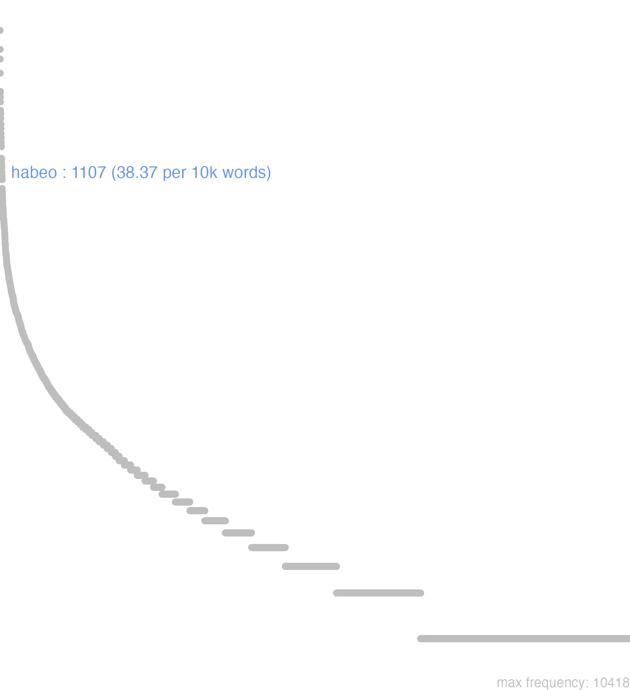

66 habeo
66.0.0.1 bases lexicais
id: http://lila-erc.eu/data/id/lemma/105044
classe: verbo
paradigma: 2ª conjugação (tema em -ē-)
outras grafias:
variantes do lema:
habeo presente | indicativo | 1ª pessoa singular | voz ativa
habere presente | infinitivo | ativo
habebit futuro | indicativo | 3ª pessoa singular | voz ativa
habui pretérito perfeito | indicativo | 1ª pessoa singular | voz ativa
habitum particípio passado | nominativo neutro singular
habiturum particípio futuro | nominativo neutro singular
hăbĕō
hăbēs
hăbēre
hăbŭī
hăbĭtum
66.0.0.2 dicionários tradicionais
habĕō -ēs -ēre habŭī, habĭtum
v. tr. e intr.
Obs.: Constrói-se com acus., com dois acus., com inf., com gen. de preço ou como intransitivo. Em Cícero Leg. 2, 19 ocorre a forma habessit = habuerit, por arcaísmo.
v. tr. e intr.
Obs.: Constrói-se com acus., com dois acus., com inf., com gen. de preço ou como intransitivo. Em Cícero Leg. 2, 19 ocorre a forma habessit = habuerit, por arcaísmo.
1 I-Sent. próprio Manter, manter-se Cés. B. Civ. 3, 31, 3: Sal. C. Cat. 52, 14.
2 I-Daí: Possuir, ocupar, tomar posse de, guardar Verg. Fn. 2, 290; S~1. B. Jug. 2, 3; Cíc. Verr. 5, 104; Cíc. Verr. 2, 47.
3 I-Donde: Ter, haver sent. próprio e figurado Cés .. B. Gal. I, 8, 1; Cíc. Verr. 2, 184; Cíc. Fam. 7, 26, 1; Cíc. Tusc. I, 57; Cíc. Leg. 2, 57.
4 II-Sent. figurado: Tratar Sal. B. Jug. 113, 2; Sal. B. Jug. 64, 5.
5 II-Sent. figurado: Ter como, considerar como, julgar, avaliar Cíc. Nat. I, 45; Cés. B. Gal. I, 44, I I; Cíc. Of. 1, 1441.
6 II-Sent. figurado: Conhecer. saber Cíc. Rep. 2, 33.
7 II-Sent. figurado: Passar o tempo Sal. C. Cat. 51, 12.
habēssit
= habuerit, fut. perf. de habeo Cie. Leg. 2, 19.
habŭī
perf. de habĕo.
Hăbĕo -ēs -ŭī -ĭtŭm -ērĕ
v. trans. e intrans. da raiz Hab, correspondente á gr. ἉΠ, d’onde ἁπτομαι, ἁπτω, ἁφή.
v. trans. e intrans. da raiz Hab, correspondente á gr. ἉΠ, d’onde ἁπτομαι, ἁπτω, ἁφή.
1 sêr ou estar senhor de, ter, conter, encerrar, abranger, exhibir;
1 ter, possuir;
2 ter em si, trazer, andar com;
3 entrar de posse, tomar;
3 guardar, ter em segredo;
3 reassumir, ganhar, alcançar, obter;
4 saber, conhecer;
4 ter para dizer, a responder;
5 têr em odio, despreso, etc., ter como objeto de lucro;
5 tractar alguem, portar-se para com;
5 tractar de negocios, dirigir, administrar;
6 estar sujeito, exposto a, soffrer, supportar;
6 receber um golpe;
6 ser objecto de, experimentar;
6 tomar uma coisa d’um modo qualquer;
6 topar alguem em uma disposição qualquer;
7 seguido d’um adj. pôr n’este ou naquelle estado, tornar, reduzir a;
7 Seguido d’um part.p. ter;
8 poder;
8 ter que fazer uma coisa, dever, haver de;
9 pass. dizer-se, contar-se, referir-se;
9 ter, considerar, reputar como, ter em conta de, julgar;
10 avaliar, presar, estimar;
11 passar o tempo;
12 celebrar uma assemblêa;
12 fazer, cumprir, executar;
13 habitar, morar;
14 ter de seu, sêr rico;
15 Habere se, ou simpleste Habere. achar-se n’um estado qualquer, estar;
15 pass. sêr;
16 Diversas phrases.
[EXEMPLOS]
1
aduentus eius habuit interitum equitatûs Cic Á sua chegada foi derrotada a cavallaria
animalia somnus habebat Virg Os animaes dormiam profundamente
filias meas qui casus habeat, nescio Suet Não sei qual seja a sorte de minhas filhas
fundum habere Cic Possuir uma herdade
habebit filium Hier Ella terá um filho
habere aliquem collegam Cic Ter alguem por collega;
habere aliquem in metu Cic Ter medo de alguem, receiar, desconfiar d’elle
habere animo Sall Fazer tenção, ter na tenção, ter a intenção de, fazer conta de, ter em mira
habere cubitum Hier Ter um covado de comprimento
habere heredem Hier Ter alguem por herdeiro
habere in animo Cic Fazer tenção, ter na tenção, ter a intenção de, fazer conta de, ter em mira
habere infamiam Cæs Sêr vergonhoso; infamante
habere insidias Phaed Conter uma cilada
habere motum Cic Sêr dotado de movimento
habere odium in aliquem Cic Ter odio a alguem
habere spem in aliquo Nep Pôr a sua esperança em alguem
habere turpitudinem Cic Sêr vergonhoso; infamante
habesne hominem? Ter Encontraste o homem? Tens o homem debaixo de mão?
habet luctum concursus hominum Cic A concurrencia de gente aggrava a dôr
hostis habet muros Virg O inimigo está de posse da cidade
is annus legationes habuit Tac Este anno houve embaixadas
nil maius habemus Ov Nada tenho mais precioso
nos Amaryllis habet Virg Amaryllida é senhora de mim, eu sou escravo de Amaryllida
qui se non habet Mart O que não é senhor de si mesmo
2
annulus subtertenuatur habendo Lucr Um annel gasta-se com o uso
arbor habet frondes Ov A arvore está coberta de folhas
nullas uestes habet Ov Não tem o Amor vestido algum, está nú
tegmen habent capiti… Virg Teem por cobertura da cabeça…
3
habeat secum seruetque sepulcro Virg Guarde e conserve este amor no tumulo
habere ægros in tenebris Cels Têr os doentes no escuro
habere modum Sall Guardar melindre, ter consideração a
hæc tecum habeto Cic Guarda isto para ti, guarda segredo á cerca d’disto, não reveles isto
in custodiis haberi Sall Sêr guardado em prisão
res tuas tibi habe Plaut. Cic. Mart Toma o que é teu formula de divórcio;
res tuas tibi habe Plaut. Cic. Mart Vae-te ambora, sae d’aqui, muda-te
sibi habeat suam fortunam Cic Lá se avenha com a sua fortuna, eu não lhe invejo a fortuna
tecum habeto Cic Guarda isto para ti, guarda segredo á cerca d’disto, não reveles isto
ut sibi haberet hereditatem Cic Que adjudicasse a si a herança
4
habes Ter Tu bem sabes, é isto
habes ea quæ disputant… Cic Aqui tens o que elles discorrem
habes nostra consilia Cic Tu sabes nossas intenções
habes nostras sententias Suet Conheces nosso pensamento
habes omnem rem Ter Agora sabes tudo
hoc unum habeo Ter Não tenho mais que dizer, digo só isto
incipe, si quid habes Virg Começa, se tens alguma coisa para contar
nisi quid habes ad hæc Cic A não sêr que tenhas alguma coisa a objectar
5
habere aliquem odio Nep Odiar alguem
habere aliquem pro hoste Liv Tractar alguem como inimigo
habere aliquid pro irrito Suet Não fazer caso de alguma coisa, reputal-a por nada
habere derelictui uineam Gell Não cuidar da vinha, deixal-a perder
habere despicatui Plaut Despresar alguem
habere diuitias honeste Sall Fazer bom uso das riquesas
habere male Cæs Maltractar, vexar
habere male Cels Atormentar, torturar
habere præcipuo honore Cæs Tractar alguem com muita consideração
habere prædæ magistratum Sall Valer-se da magistratura para roubar
habere remp. quæstui Cic Traficar com as coisas publicas, valer-se d’ellas para lucrar
quomodo remp. habuerint Tac Como tiverem dirigido os negocios do estado
utì me habueris Plaut Como me houveres tractado
6
acerbum habuimus Curionem Cic Encontramos Curião desfavorável a nosso respeito
egestas facile habetur Sall Leva-se com resignação a pobresa
habere admirationem Plin Inspirar, causar admiração
habere conuitium Petr Soffrer uma affronta
habere febrem Cic Ter febre
habere impune Tac Deixar sem castigo
habere iniurias grauius æquo Sall Sentir demasiadamente as injurias
habere inuidiam Cic Sêr objecto de odio
habere omnium amorem Nep Ter a affeição de todos
habere suspicionem Nep Causar suspeita
haberes magnum adiutorem Hor Encontrarias em mim um bom auxiliador
habet Sen. tr Está ferido um gladiador na lucta;
habet Sen. tr Está apanhado, está vencido
hoc habet Plaut. Virg Está ferido um gladiador na lucta;
hoc habet Plaut. Virg Está apanhado, está vencido
odii nihil habet Cic Não é malquisto, não tem inimigos
7
bellum semper habuit indictum… Cic Tem sempre estado em guerra aberta com…
de Cæsare satis dictum habeo Cic Tenho fallado assaz de Cesar
habeo pactam sororem meam filio… Plaut Tenho a minha irman despojada com o filho…
habere aliquem sollicitum Cic Desassocegar, inquietar; preoccupar alguem; fazel-o mui infeliz
habere intentum Liv Desassocegar, inquietar; preoccupar alguem; fazel-o mui infeliz
habere miserrimum Fronto Desassocegar, inquietar; preoccupar alguem; fazel-o mui infeliz
neque ea res falsum me habuit Sall Nem me enganou este acontecimento
nostram adolescentiam habent despicatam Ter Elles olham com desdem para a nossa mocidade
quare mare infestum haberet Cic Porque elle infestava o mar
8
eatenus habemus præcipiendum Colum São estes os preceitos que damos
etiam filius Dei mori habuit Tert O mesmo filho de Deus teve de morrer, i. é., foi mister que elle morresse
habere aliquid curare Varr Ter alguma coisa de que cuidar
habui quæ dicerem Cic É isto o que eu tinha a dizer
hæc habui dicere Cic É isto o que eu tinha a dizer
illud affirmare pro certo habeo Liv Posso affirmar isto como certo
tolli uicissim pontus habet V. Fl O mar tem que elevar-se alternativamente
9
habeare insuauis Hor Serás reputado severo
habere aliquem in numero sapientûm Cic Contar alguem no numero dos sabios
habere aliquem mortuum Cic Reputar alguem morto
habere aliquem pro hoste Ter alguem por inimigo
habere aliquid pro certo Liv Ter como certo
habere deos æternos Cic Crêr que os deuses são eternos
habere nefas Cic Ter como uma impiedade…
hoc sic habeto Cic Convence-te, fica sabendo
illud uelim sic habeas Cic Convence-te, fica sabendo
sic habeto Cic Convence-te, fica sabendo
10
cuius auctoritas in Britannia magni habebatur Cic Cuja autoridade era mui considerada na Britannia
habere in leui Tac Fazer pouco de
non nauci habeo augurem Enn Não tenho em conta alguma o agoureiro
11
habere diem luculentum Plaut Passar um dia alegre
habere uitam in obscuro Sall Passar a vida na obscuridade
ubi adolescentiam habuere Sall Onde elles passaram a adolescencia
12
habere auspicia Liv Tomar agouros
habere censum Cæs Fazer a resenha
habere comitia Sall Celebrar comicios assembleas do povo
habere consilium Virg Fazer conselho
habere conuiuium Plin Dar um banquete
habere delectum Cic Fazer uma leva de gente recrutar
habere expurgationem Plaut Justificar-se
habere iter Cic. Cæs Fazer jornada, ir de viagem, ir, ou estar em caminho
habere ludos Suet Dar jogos
habere orationem Plaut pronunciar um discurso
habere querellam de aliquo Cic Queixar-se de alguem
habere senatum Cic Convocar o senado
habere sermonem Cic Ter uma conversação
habere supplicationes Liv Fazer preces publicas
habere uerba Cic Fallar;
13
adolescens qui hic habet Plaut O moço que mora aqui
quæ arcem habebant Cic As que moravam na cidadella
qui habeant homines loca Virg Que homens habitam estes logares
qui in Bruttiis habent Cic Os que habitam em Bruttio
14
amor habendi Virg A ambição de ter, o desejo de riquesas
habere in nummis, in prædiis Cic Ter seus haveres em dinheiro, em propriedades
qui habet, ultro appetitur Cic O que tem de seu, é naturalmente procurado
15
bene habet Ter A coisa vae bem, corre bem, está bem
bene habet Prop Vae-me bem, sou feliz
bene habet Juv Basta, é sufficiente bastante, não é preciso mais
quum ego me non belle haberem Cic Como eu não me desse bem
res sic se habet Cic Assim é, é d’este modo
se isto modo res habet Cic Isto é incontestável
sic habet Hor Assim é, é d’este modo
sicuti pleraque mortalium habentur Sall Como acontece ordinariamente
16
habebat hoc Cic. Hor Era este o seu habito, costume, caracter, principio
habere fidem Ved. estas palavras
habere frustra Ved. estas palavras
habere gratiam Ved. estas palavras
habere necesse Ved. estas palavras
habere negotium Ved. estas palavras
habere opinionem Ved. estas palavras
habere opus Ved. estas palavras
habere parum Sall Não se contentar com
habere rationem Ved. estas palavras
habere religioni Cic Ter escrupulo de
habere rem etc. Ved. estas palavras
habere satis Cic. Nep Ter por bastante, contentar-se com
Habeo -es -ui -itum -ere
1 Cic. ter, possuir.
2 habitar.
3 estimar, prezar.
4 imaginar, crer, persuadir-se.
5 Sall. demorar, retardar, deter.
6 Virg. occupar.
[EXEMPLOS]
X
habere aliquem despicatui Plaut Desprezar alguem
habere aliquid nullo loco Cic Desprezar, fazer pouco caso
habere belle Cic Estar com boa saude
habere bene Cic Estar com boa saude
habere certum Cic Saber com certeza, estar perfeitamente informado
habere cognitum Cic Fazer escrupulo de consciencia
habere compertum Cic Fazer escrupulo de consciencia
habere exploratum Cic Fazer escrupulo de consciencia
habere in leui Ter Desprezar, fazer pouco caso
habere male Cic Estar doente
habere perspectum Cic Fazer escrupulo de consciencia
habere pro certo Cic Fazer escrupulo de consciencia
habere pro comperto Cic Fazer escrupulo de consciencia
habere pro stercore Plaut Desprezar, fazer pouco caso
habere rationem cum terra Cic Cultivar a terra
habere religioni Cic Fazer escrupulo de consciencia
apud Cic. por Habeat Habessit
Habeo -es
Vide Fero.
Vide Fero.
1 ter, possuir, estimar
[EXEMPLOS]
X
aegre habere levar mal
alicui habere fidem crer
alicui habere gratiam, uel gratias ficar agradecido, e com animo de recompensar o beneficio
alicui habere honorem honrar
aliquem bene, uel comiter habere tratar a alguem bem com affabilidade, e cortezia
aliquem despicatum, uel despicatui, contemptui, uel despectui habere desprezar
aliquem in deliciis habere amar muito
aliquid derelictui, uel pro derelicto habere naõ ter cuidado, ou naõ tratar de alguma cousa
bene, uel belle habere estar bem
habendum est i, intelligendum
habeo omnem rem entendo tudo
habeo polliceri, audire, & c i, possum
habere concionem prégar
habere delectum escolher
habere iter, uel uiam caminhar
habere rationem salutis, honoris, & c ter conta ou cuidado da saude, etc
habere uerba fallar
habeto i, ita tibi persuadeto
male habere estar mal
omnia susque, deque habet, uel fert tudo leva com igual animo, de nada se lhe dá
Habeo -es ui itum
1 ter. ou entẽder
Habet1 Dir-se-ha quando hum tem o que deseiou. ou o que mereceo. Tomou-se dos caçadores. ou pescadores que quando tornão as redes. dizem. Hay algo.
66.0.0.3 dados de corpus
![This chart plots collocate by scoreSUBST, for the headword habeo here are all the values plotted: collocate: nihil; scoreSUBST: 0. collocate: non; scoreSUBST: 0. collocate: nullus; scoreSUBST: 0. collocate: qui; scoreSUBST: 0. collocate: sui; scoreSUBST: 0. collocate: ratio; scoreSUBST: 2. collocate: certus; scoreSUBST: 0. collocate: delectus; scoreSUBST: 3. collocate: auctoritas; scoreSUBST: 2. collocate: sic; scoreSUBST: 0. collocate: aliquis; scoreSUBST: 0. collocate: quisquam; scoreSUBST: 0. collocate: spes; scoreSUBST: 2. collocate: numerus; scoreSUBST: 2. collocate: potestas; scoreSUBST: 2. collocate: amicus; scoreSUBST: 2. collocate: oratio; scoreSUBST: 2. collocate: consul; scoreSUBST: 2. collocate: semper; scoreSUBST: 0. collocate: quantus; scoreSUBST: 0. collocate: quidam; scoreSUBST: 0. collocate: se; scoreSUBST: 0. collocate: nemo; scoreSUBST: 0. collocate: uis; scoreSUBST: 1. collocate: nondum; scoreSUBST: 0. collocate: fides; scoreSUBST: 2. collocate: honor; scoreSUBST: 2. collocate: bene; scoreSUBST: 0. collocate: existimo; scoreSUBST: 0. collocate: uenalis; scoreSUBST: 0. collocate: panis; scoreSUBST: 2. collocate: possessio; scoreSUBST: 2. collocate: parum2; scoreSUBST: 2. collocate: popularis; scoreSUBST: 0. collocate: multum2; scoreSUBST: 2. collocate: facultas; scoreSUBST: 2. collocate: nisi2; scoreSUBST: 0. collocate: contio; scoreSUBST: 2. collocate: male; scoreSUBST: 0. collocate: quomodo; scoreSUBST: 0. collocate: aditus; scoreSUBST: 2. collocate: necessitas; scoreSUBST: 2. collocate: comitium; scoreSUBST: 2. collocate: auris; scoreSUBST: 2. collocate: instituo; scoreSUBST: 0. collocate: satis2; scoreSUBST: 0. collocate: quantum; scoreSUBST: 0. collocate: praeclarus; scoreSUBST: 0. collocate: usus; scoreSUBST: 1](./Media/wordcloud__xx104-97-98-101-111xx__BY_collocate_scoreSUBST.webp)
![This chart plots collocate by scoreADJ, for the headword habeo here are all the values plotted: collocate: nihil; scoreADJ: 0. collocate: non; scoreADJ: 0. collocate: nullus; scoreADJ: 0. collocate: qui; scoreADJ: 0. collocate: sui; scoreADJ: 0. collocate: ratio; scoreADJ: 0. collocate: certus; scoreADJ: 2. collocate: delectus; scoreADJ: 0. collocate: auctoritas; scoreADJ: 0. collocate: sic; scoreADJ: 0. collocate: aliquis; scoreADJ: 0. collocate: quisquam; scoreADJ: 0. collocate: spes; scoreADJ: 0. collocate: numerus; scoreADJ: 0. collocate: potestas; scoreADJ: 0. collocate: amicus; scoreADJ: 0. collocate: oratio; scoreADJ: 0. collocate: consul; scoreADJ: 0. collocate: semper; scoreADJ: 0. collocate: quantus; scoreADJ: 0. collocate: quidam; scoreADJ: 0. collocate: se; scoreADJ: 0. collocate: nemo; scoreADJ: 0. collocate: uis; scoreADJ: 0. collocate: nondum; scoreADJ: 0. collocate: fides; scoreADJ: 0. collocate: honor; scoreADJ: 0. collocate: bene; scoreADJ: 0. collocate: existimo; scoreADJ: 0. collocate: uenalis; scoreADJ: 2. collocate: panis; scoreADJ: 0. collocate: possessio; scoreADJ: 0. collocate: parum2; scoreADJ: 0. collocate: popularis; scoreADJ: 2. collocate: multum2; scoreADJ: 0. collocate: facultas; scoreADJ: 0. collocate: nisi2; scoreADJ: 0. collocate: contio; scoreADJ: 0. collocate: male; scoreADJ: 0. collocate: quomodo; scoreADJ: 0. collocate: aditus; scoreADJ: 0. collocate: necessitas; scoreADJ: 0. collocate: comitium; scoreADJ: 0. collocate: auris; scoreADJ: 0. collocate: instituo; scoreADJ: 0. collocate: satis2; scoreADJ: 2. collocate: quantum; scoreADJ: 0. collocate: praeclarus; scoreADJ: 2. collocate: usus; scoreADJ: 0](./Media/wordcloud__xx104-97-98-101-111xx__BY_collocate_scoreADJ.webp)
![This chart plots collocate by scoreVERBO, for the headword habeo here are all the values plotted: collocate: nihil; scoreVERBO: 0. collocate: non; scoreVERBO: 0. collocate: nullus; scoreVERBO: 0. collocate: qui; scoreVERBO: 0. collocate: sui; scoreVERBO: 0. collocate: ratio; scoreVERBO: 0. collocate: certus; scoreVERBO: 0. collocate: delectus; scoreVERBO: 0. collocate: auctoritas; scoreVERBO: 0. collocate: sic; scoreVERBO: 0. collocate: aliquis; scoreVERBO: 0. collocate: quisquam; scoreVERBO: 0. collocate: spes; scoreVERBO: 0. collocate: numerus; scoreVERBO: 0. collocate: potestas; scoreVERBO: 0. collocate: amicus; scoreVERBO: 0. collocate: oratio; scoreVERBO: 0. collocate: consul; scoreVERBO: 0. collocate: semper; scoreVERBO: 0. collocate: quantus; scoreVERBO: 0. collocate: quidam; scoreVERBO: 0. collocate: se; scoreVERBO: 0. collocate: nemo; scoreVERBO: 0. collocate: uis; scoreVERBO: 0. collocate: nondum; scoreVERBO: 0. collocate: fides; scoreVERBO: 0. collocate: honor; scoreVERBO: 0. collocate: bene; scoreVERBO: 0. collocate: existimo; scoreVERBO: 2. collocate: uenalis; scoreVERBO: 0. collocate: panis; scoreVERBO: 0. collocate: possessio; scoreVERBO: 0. collocate: parum2; scoreVERBO: 0. collocate: popularis; scoreVERBO: 0. collocate: multum2; scoreVERBO: 0. collocate: facultas; scoreVERBO: 0. collocate: nisi2; scoreVERBO: 0. collocate: contio; scoreVERBO: 0. collocate: male; scoreVERBO: 0. collocate: quomodo; scoreVERBO: 0. collocate: aditus; scoreVERBO: 0. collocate: necessitas; scoreVERBO: 0. collocate: comitium; scoreVERBO: 0. collocate: auris; scoreVERBO: 0. collocate: instituo; scoreVERBO: 2. collocate: satis2; scoreVERBO: 0. collocate: quantum; scoreVERBO: 0. collocate: praeclarus; scoreVERBO: 0. collocate: usus; scoreVERBO: 0](./Media/wordcloud__xx104-97-98-101-111xx__BY_collocate_scoreVERBO.webp)
![This chart plots collocate by scoreADV, for the headword habeo here are all the values plotted: collocate: nihil; scoreADV: 0. collocate: non; scoreADV: 2. collocate: nullus; scoreADV: 0. collocate: qui; scoreADV: 0. collocate: sui; scoreADV: 0. collocate: ratio; scoreADV: 0. collocate: certus; scoreADV: 0. collocate: delectus; scoreADV: 0. collocate: auctoritas; scoreADV: 0. collocate: sic; scoreADV: 2. collocate: aliquis; scoreADV: 0. collocate: quisquam; scoreADV: 0. collocate: spes; scoreADV: 0. collocate: numerus; scoreADV: 0. collocate: potestas; scoreADV: 0. collocate: amicus; scoreADV: 0. collocate: oratio; scoreADV: 0. collocate: consul; scoreADV: 0. collocate: semper; scoreADV: 2. collocate: quantus; scoreADV: 0. collocate: quidam; scoreADV: 0. collocate: se; scoreADV: 0. collocate: nemo; scoreADV: 0. collocate: uis; scoreADV: 0. collocate: nondum; scoreADV: 2. collocate: fides; scoreADV: 0. collocate: honor; scoreADV: 0. collocate: bene; scoreADV: 2. collocate: existimo; scoreADV: 0. collocate: uenalis; scoreADV: 0. collocate: panis; scoreADV: 0. collocate: possessio; scoreADV: 0. collocate: parum2; scoreADV: 0. collocate: popularis; scoreADV: 0. collocate: multum2; scoreADV: 0. collocate: facultas; scoreADV: 0. collocate: nisi2; scoreADV: 2. collocate: contio; scoreADV: 0. collocate: male; scoreADV: 2. collocate: quomodo; scoreADV: 2. collocate: aditus; scoreADV: 0. collocate: necessitas; scoreADV: 0. collocate: comitium; scoreADV: 0. collocate: auris; scoreADV: 0. collocate: instituo; scoreADV: 0. collocate: satis2; scoreADV: 0. collocate: quantum; scoreADV: 2. collocate: praeclarus; scoreADV: 0. collocate: usus; scoreADV: 0](./Media/wordcloud__xx104-97-98-101-111xx__BY_collocate_scoreADV.webp)
![This chart plots collocate by scoreFUNC, for the headword habeo here are all the values plotted: collocate: nihil; scoreFUNC: 0. collocate: non; scoreFUNC: 0. collocate: nullus; scoreFUNC: 0. collocate: qui; scoreFUNC: 0. collocate: sui; scoreFUNC: 0. collocate: ratio; scoreFUNC: 0. collocate: certus; scoreFUNC: 0. collocate: delectus; scoreFUNC: 0. collocate: auctoritas; scoreFUNC: 0. collocate: sic; scoreFUNC: 0. collocate: aliquis; scoreFUNC: 0. collocate: quisquam; scoreFUNC: 0. collocate: spes; scoreFUNC: 0. collocate: numerus; scoreFUNC: 0. collocate: potestas; scoreFUNC: 0. collocate: amicus; scoreFUNC: 0. collocate: oratio; scoreFUNC: 0. collocate: consul; scoreFUNC: 0. collocate: semper; scoreFUNC: 0. collocate: quantus; scoreFUNC: 0. collocate: quidam; scoreFUNC: 0. collocate: se; scoreFUNC: 0. collocate: nemo; scoreFUNC: 0. collocate: uis; scoreFUNC: 0. collocate: nondum; scoreFUNC: 0. collocate: fides; scoreFUNC: 0. collocate: honor; scoreFUNC: 0. collocate: bene; scoreFUNC: 0. collocate: existimo; scoreFUNC: 0. collocate: uenalis; scoreFUNC: 0. collocate: panis; scoreFUNC: 0. collocate: possessio; scoreFUNC: 0. collocate: parum2; scoreFUNC: 0. collocate: popularis; scoreFUNC: 0. collocate: multum2; scoreFUNC: 0. collocate: facultas; scoreFUNC: 0. collocate: nisi2; scoreFUNC: 0. collocate: contio; scoreFUNC: 0. collocate: male; scoreFUNC: 0. collocate: quomodo; scoreFUNC: 0. collocate: aditus; scoreFUNC: 0. collocate: necessitas; scoreFUNC: 0. collocate: comitium; scoreFUNC: 0. collocate: auris; scoreFUNC: 0. collocate: instituo; scoreFUNC: 0. collocate: satis2; scoreFUNC: 0. collocate: quantum; scoreFUNC: 0. collocate: praeclarus; scoreFUNC: 0. collocate: usus; scoreFUNC: 0](./Media/wordcloud__xx104-97-98-101-111xx__BY_collocate_scoreFUNC.webp)
![This charts plots the frequency of lemma by author_Frequencies. The Hieronymus subcorpus registers the highest normalized frequency, with the value of 87.62 and an absolute frequency of 39. The Sallustius subcorpus follows, with a normalized frequency of 69.57 and an absolute frequency of 75. the subcorpus with the least normalized frequency is Vergilius with the normalized value of 3.86 and an absolute freqeuncy of 2. here are all the values: subcorpus: Caesar ; normalized frequency: 118 ; absolute frequency: 44.5652994939195. subcorpus: Cicero ; normalized frequency: 589 ; absolute frequency: 36.6923326107. subcorpus: Horatius ; normalized frequency: 25 ; absolute frequency: 22.2005150519492. subcorpus: Ovidius ; normalized frequency: 22 ; absolute frequency: 37.7487989018531. subcorpus: Phaedrus ; normalized frequency: 15 ; absolute frequency: 22.772126916654. subcorpus: Sallustius ; normalized frequency: 75 ; absolute frequency: 69.5668305352008. subcorpus: Seneca ; normalized frequency: 217 ; absolute frequency: 40.4994307683694. subcorpus: Suetonius ; normalized frequency: 1 ; absolute frequency: 11.0253583241455. subcorpus: Tacitus ; normalized frequency: 4 ; absolute frequency: 13.7315482320632. subcorpus: Vergilius ; normalized frequency: 2 ; absolute frequency: 3.86100386100386. subcorpus: Hieronymus ; normalized frequency: 39 ; absolute frequency: 87.6207593799146](./Media/barchart__xx104-97-98-101-111xx__lemma_BY_author_Frequencies.webp)
![This charts plots the frequency of lemma by genre_Frequencies. The Prosa.ficcional subcorpus registers the highest normalized frequency, with the value of 87.62 and an absolute frequency of 39. The Prosa.filosófica subcorpus follows, with a normalized frequency of 49.26 and an absolute frequency of 299. the subcorpus with the least normalized frequency is Poesia.épica with the normalized value of 3.86 and an absolute freqeuncy of 2. here are all the values: subcorpus: Prosa.histórica ; normalized frequency: 198 ; absolute frequency: 48.1998101219601. subcorpus: Prosa.filosófica ; normalized frequency: 299 ; absolute frequency: 49.2578375974037. subcorpus: Prosa.oratória ; normalized frequency: 325 ; absolute frequency: 31.2040939771298. subcorpus: Prosa.epistolográfica ; normalized frequency: 175 ; absolute frequency: 46.3711280108111. subcorpus: Poesia.lírica ; normalized frequency: 30 ; absolute frequency: 25.2376545806343. subcorpus: Poesia.didática ; normalized frequency: 32 ; absolute frequency: 27.1439477479006. subcorpus: Poesia.trágica ; normalized frequency: 7 ; absolute frequency: 6.08061153578874. subcorpus: Poesia.épica ; normalized frequency: 2 ; absolute frequency: 3.86100386100386. subcorpus: Prosa.ficcional ; normalized frequency: 39 ; absolute frequency: 87.6207593799146](./Media/barchart__xx104-97-98-101-111xx__lemma_BY_genre_Frequencies.webp)
![This charts plots the frequency of lemma by period_Frequencies. The IV.d.C. subcorpus registers the highest normalized frequency, with the value of 87.62 and an absolute frequency of 39. The I.d.C. subcorpus follows, with a normalized frequency of 38.09 and an absolute frequency of 249. the subcorpus with the least normalized frequency is II.d.C. with the normalized value of 13.09 and an absolute freqeuncy of 5. here are all the values: subcorpus: I.a.C. ; normalized frequency: 814 ; absolute frequency: 37.8868978356993. subcorpus: I.d.C. ; normalized frequency: 249 ; absolute frequency: 38.0908673703534. subcorpus: II.d.C. ; normalized frequency: 5 ; absolute frequency: 13.0890052356021. subcorpus: IV.d.C. ; normalized frequency: 39 ; absolute frequency: 87.6207593799146](./Media/barchart__xx104-97-98-101-111xx__lemma_BY_period_Frequencies.webp)
atqui sic habet
Hor.S.1.9.52
“No entanto, é assim.” [JDD]
quot panes habetis
Vulg.Marc.6.38
Quantos pães tendes? [JDD]
nihil habet certi
Cic.Att.2.22.1
não tem nada de definido. [JDD, de outra edição]
necdum habetis fidem
Vulg.Marc.4.40
Ainda não tendes fé? [JDD]
nulla ne habes uitia
Hor.S.1.3.20
Não tens nenhum defeito?” [JDD]
dilectus habetur civium Romanorum
Cic.Att.5.18.2
Tem-se um recrutamento de cidadãos romanos. [JDD]
fructum domesticum non habent
Cic.Att.1.18.1
não têm utilidade para minha vida doméstica. [JDD]
hac oratione habita concilium dimisit
Caes.Gal.1.33.2
Feito esse discurso, encerrou a reunião. [JDD]
cum haec leges habebimus consules
Cic.Att.5.12.2
Quando estiveres lendo isto, teremos cônsules. [JDD]
imperator inquit se bene habet
Sen.Ep.24.10
“O general”, diz ele, “se acha bem”. [JDD]
nunc se res sic habet
Cic.Att.2.22.1
Agora a coisa está assim. [JDD]
comitia enim credo esse habita
Cic.Att.3.14.1
Pois creio que já foram realizadas as eleições. [JDD]
qui habet aures audiendi audiat
Vulg.Marc.4.9
Quem tem ouvido para ouvir, que ouça. [JDD]
in ceteris parem habuit neminem
Cic.Att.4.15.6
não teve ninguém igual entre os demais. [JDD]
narrabo cum aliquid habebo novi
Cic.Att.5.6.2
Contarei quando eu tiver algo de novo. [JDD]
mors necessitatem habet aequam et inuictam
Sen.Ep.30.11
11 A morte tem sua regra equitativa e invencível. [JDD]
omnes autem male habet ignorantia ueri
Sen.Ep.118.7
A todos, porém, a ignorância da verdade trata mal. [JDD]
utrum mauis habere multum an satis
Sen.Ep.119.6
Preferes ter muito ou o suficiente? [JDD]
itaque contione aduocata huiuscemodi orationem habuit
Sal.Cat.57.6
E assim, convocada uma assembléia, pronunciou um discurso desse modo. [JDD, de outra edição]
bene habet iacta sunt fundamenta defensionis
Cic.Mur.14
Está bem; estão postos os fundamentos da defesa. [JDD]
quidquid habes age depone tutis auribus
Hor.Carm.1.27.17
O que quer que tenhas, vai confia a ouvidos seguros. [JDD]
si quis habet aures audiendi audiat
Vulg.Marc.4.23
Se alguém tem ouvidos para ouvir, que ouça. [JDD]
si quid habes certius velim scire
Cic.Att.4.10.1
Se tens algo mais certo, gostaria de saber. [JDD]
cum habeat duo facilis nihil difficilius
Cic.Att.4.16.4
embora ele tenha duas pessoas bem dispostas, não há nada mais difícil. [JDD]
haec habui de amicitia quae dicerem
Cic.Amici.104
Tinha estas coisas para dizer acerca da amizade. [JDD]
bonos inimicos habet improbos ipsos non amicos
Cic.Att.2.21.3
Tem os homens de bem como inimigos, os próprios ímprobos não tem como amigos. [JDD]
in sua potestate habet quam cito reparet
Sen.Ep.9.5
tem em seu poder substituí-lo o mais rápidamente possível. [JDD]
hanc enim habebat semper in ore prouinciam
Cic.Phil.3.26.8
Pois sempre tinha em sua boca esta província. [JDD]
hunc iudicem ex kalendis Ianuariis non habebimus
Cic.Ver.1.29
Esse juiz não o teremos a partir das calendas de janeiro [1º. de janeiro]. [JDD]
qui si sustulerint religionem aream praeclaram habebimus
Cic.Att.4.1.7
Se eles anularem a sagração, tenho um terreno esplêndido. [JDD, de outra edição]
iudices habemus quos voluimus summa accusatoris voluntate
Cic.Att.1.2.1
Temos os juízes que queremos, com total anuência do acusador. [JDD, de outra edição]
tempus habes tale quale nemo habuit umquam
Cic.Phil.7.27.11
Tens uma oportunidade tal qual nunca ninguém teve. [JDD]
habes crimina insidiarum nihil enim dixit amplius
Cic.Deiot.21
Aí tens a acusação da emboscada, pois não disse mais nada. [JDD]
et puto si uenalis esset non haberet emptorem
Sen.Ep.27.8
e acho, se fosse vendável, não teria comprador. [JDD]
Cito rumpes arcum semper si tensum habueris ;
Phaed.3.14
“Rapidamente romperás o arco, se o tiveres sempre esticado. [JDD]
Iamque mare et tellus nullum discrimen habebant :
Ov.Met.1.291
E o mar e a terra já não tinham nenhuma distinção. [JDD, de outra edição]
paucis diebus habebam certos homines quibus darem litteras
Cic.Att.5.17.1
Em poucos dias eu tinha homens certos aos quais entregaria a carta. [JDD]
bene habemus nos si in his spes est
Cic.Att.2.8.1
Nós nos encontramos bem, se a esperança está neles. [JDD]
Habenti cuidam pecora pepererunt oves Agnos humano capite .
Phaed.3.3
Para um sujeito que tinha rebanhos as ovelhas pariram cordeiros com cabeça humana. [JDD]
sed quia rationem habendam maxime arbitror pacis atque oti
Cic.Phil.1.16.2
- mas porque julgo que é preciso sobretudo levar em conta a paz e a tranquilidade. [JDD, de outra edição]
hic quidem etiam praesidia habeo possessiones enim sunt P. Clodi
Cic.Phil.12.23.13
Aqui de fato tenho até proteção, pois são possessões de Públio Clódio. [JDD]
nam concordiam ciuium qui habere potest nullam cum habeat ciuitatem
Cic.Phil.4.14.8
ora, como ele pode ter a concórdia dos cidadãos, se não tem nenhuma cidade? [JDD, de outra edição]
inter cetera mala hoc quoque habet stultitia semper incipit uiuere
Sen.Ep.13.16
“Entre outros males a tolice tem também este: sempre começa a viver.” [JDD]
O quanta species , inquit , cerebrum non habet !
Phaed.1.7
“Oh, que grande beleza” diz “não tem cérebro!” [JDD]
tenebras habere non potes sequetur quocumque fugeris multum pristinae lucis
Sen.Ep.19.4
Não podes ter trevas; para onde quer que fujas, muito de tua antiga luz te seguirá. [JDD]
senatus decreverat ne prius comitia haberentur quam lex lata esset
Cic.Att.4.17.3
O senado tinha decretado que as eleições não se realizassem antes que a lei fosse promulgada. [JDD]
atque haec ei loquuntur qui quondam propter leuitatem populares habebantur
Cic.Phil.7.4.1
E falam essas coisas os que outrora, por causa de sua leviandade, eram tidos como populares. [JDD]
timere se dicunt quo modo ferant ueterani exercitum Brutum habere
Cic.Phil.10.15.2
Dizem que temem como suportam os veteranos que Bruto tenha um exército. [JDD]
hoc neque ipse transire habebat in animo neque hostes transituros existimabat
Caes.Gal.6.7.5
Nem ele próprio tinha a intenção de atravessá-lo nem achava que os inimigos o atravessariam. [JDD]
quanti is a ciuibus suis fieret quanti auctoritas eius haberetur ignorabas
Cic.Ver.2.4.19.2
Ignoravas o quanto ele era estimado por seus concidadãos, o quanto era considerada a sua autoridade? [JDD]
66.0.0.4 Diagrama de Zipf
